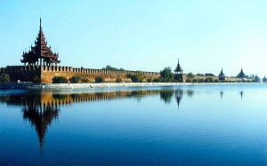
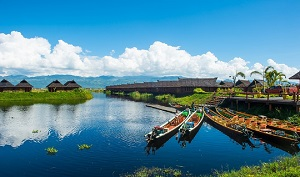
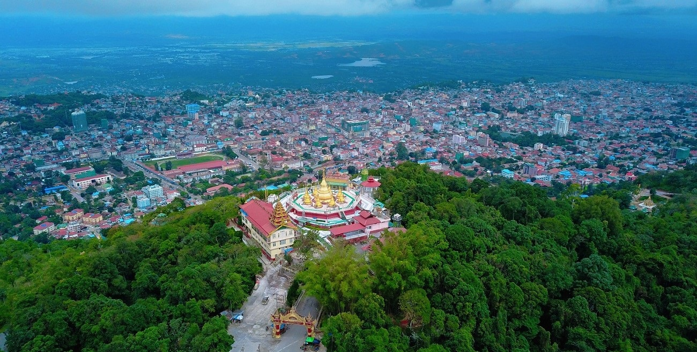

Well Come To My Countary!
About This Page
This page describe the beautiful places in myanmar countary.There are many beautiful places in myanmar countary.In Yangon, Mandalay, Bagan, Inlay and so on, have famous Pagodas,National Museum, National Parks, Golf Courses,Zoo and other attractived places to visit. In Yangon City, Shwedagon Pagoda is the most famous.And Pyi Thu Yin Pyin Park is in this city.In Mandalay City, Mahamuni Biddha Temple is the most famous pagoda.And Mandalay Hill is attravtive to visit. In addition, there are resort Beaches along the coast in Myanmar.The famous resort beaches are Ngapali, Chaugntha, Ngwe Saung.In additon, there are natural-landscapes in myanmar such as Mount Popa, Inlay Lake,Macleod Island.
|  |
| A place in Mandalay City |
|  |
|
|
 |
| A place in Inlay |
A place in Bagan |
A place in Myeik Islands |
A place in Taunggyi |